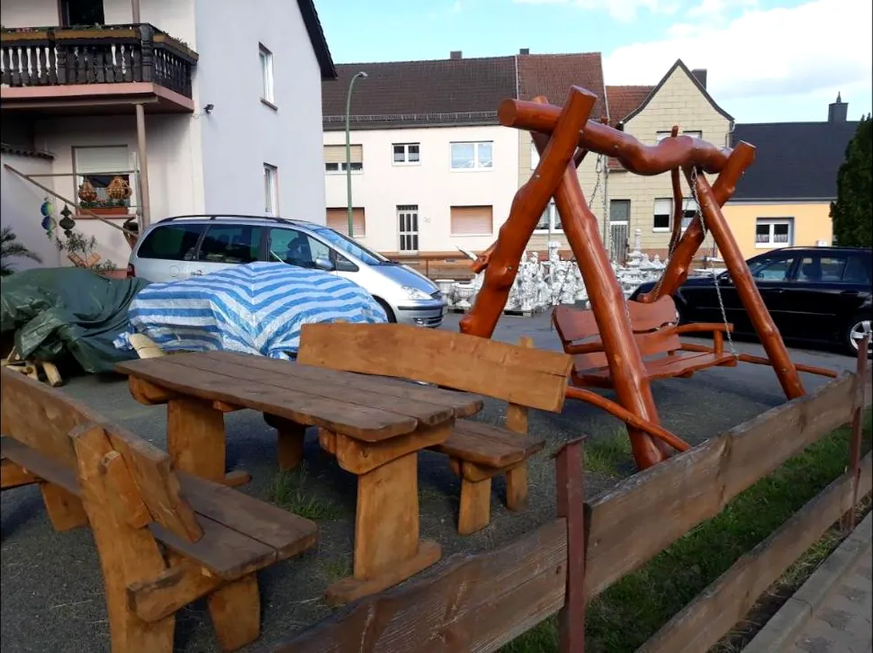
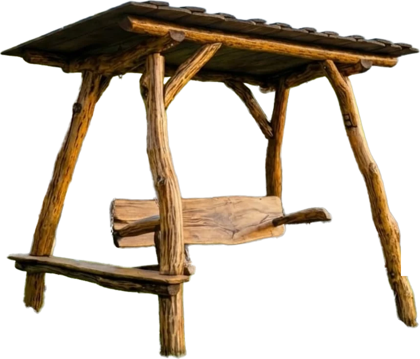
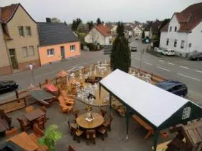
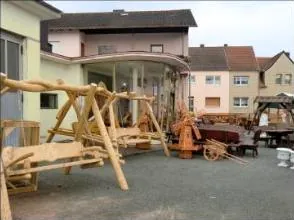
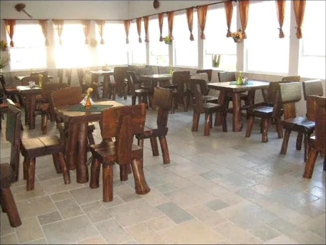
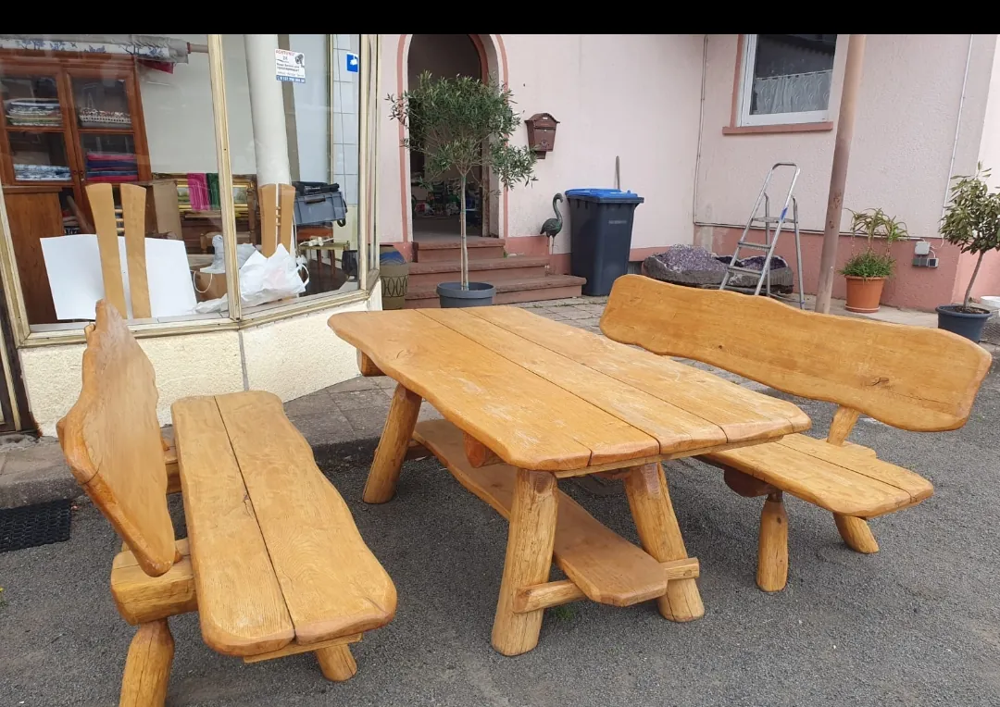
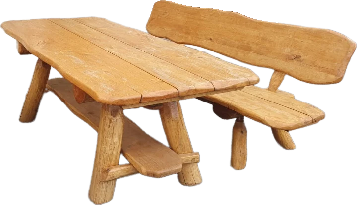
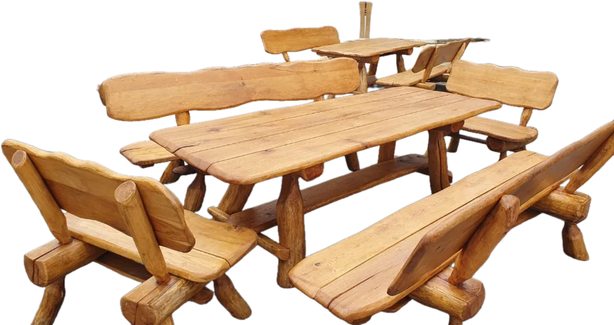
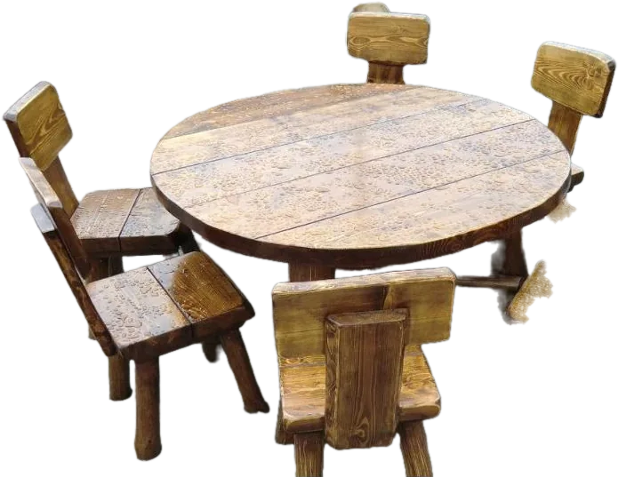

FrüherFrüher
Der Landschaftsgärtner
Jahrelang hat Janusz Wojtasczyk als Landschaftsgärtner die Gärten anderer Leute gestaltet – Wege, Beete, Terrassen. Er weiß, wie ein Garten funktioniert, bevor er ihn einrichtet.
Gartenmöbel & Gartendekoration · Kirkel-Altstadt · seit 2011
Massivholz, von Hand gebaut. Hollywoodschaukeln aus Rundholz. Figuren aus Beton. Zum Anfassen, Probesitzen und gleich Mitnehmen – an der Ortsstraße 69.

01Die Geschichte
Scrollen Sie – die Säge schneidet die Geschichte vom Stamm.

FrüherFrüher
Jahrelang hat Janusz Wojtasczyk als Landschaftsgärtner die Gärten anderer Leute gestaltet – Wege, Beete, Terrassen. Er weiß, wie ein Garten funktioniert, bevor er ihn einrichtet.

20112011
An der Ortsstraße 69 in Kirkel-Altstadt eröffnet der Garten-Traum. Tische, Bänke und Schaukeln aus massivem Holz – zum Anfassen, nicht aus dem Katalog.

20122012
Mit den Gartenmöbeln auf der Rhododendronmesse Gut Lindenfels und der Hausmesse Blickensdörfer. Wer einmal Probe gesessen hat, kommt nach Kirkel.

DannDann
Wirtshäuser, Theken und Biergärten fragen an. Der Garten-Traum richtet ganze Gaststuben mit Massivholz ein – und Gemeinden ihre Feste.

HeuteHeute
Gerade wird aufgeräumt: Restposten gibt es zu Sonderpreisen, solange der Vorrat reicht. Und ab 2027 kommt ein neues Sortiment.
02Rundgang
49 echte Fotos aus der Ausstellung an der Ortsstraße – vom ersten Sommer bis heute. Mit der Maus oder dem Finger ziehen, antippen zum Vergrößern.
03Tische & Bänke
Dicke Bohlen, Beine aus ganzen Stämmen, jede Kante von Hand. Keine zwei Garnituren sind gleich. Drehen Sie den Teller.
01 / 06
Breite Bohlen, darunter eine Ablage, Bänke mit geschwungener Lehne.
02 / 06
Zwei Bänke, zwei Sessel, Beine aus ganzen Stämmen.
03 / 06
Runder Tisch, sechs Stühle – fürs große Sonntagsfrühstück.
04 / 06
Unbehandelt, auf ganzen Stämmen – hell und mächtig.
05 / 06
Rosen in der Lehne, Knäufe am Sessel, honigfarben geölt.
06 / 06
Blätter in Lehne und Platte geschnitzt, in dunklem Ton.



↔ ziehen zum Drehen
04Hollywoodschaukeln
Packen Sie die Schaukel und ziehen Sie – oder drücken Sie auf „Anschubsen“. In der Ausstellung dürfen Sie selbst probeschaukeln.
✦Garten-Planer
Fotografieren Sie Ihren Garten oder Ihre Terrasse – und stellen Sie unsere echten Möbel und Figuren hinein. Ziehen, drehen, größer machen. Die Sonne stellen Sie selbst. Fertig? Bild speichern oder direkt mit Ihrer Anfrage schicken.
05Figuren aus Beton
Adler, Laternen, Brunnen, Tiere und Menschen – ein ganzer Hof voller Figuren aus Beton. Scrollen Sie: der Block wird gegossen – und die Figur kommt heraus.
06Gastronomie & Gemeinden
Gaststuben, Theken, Biergärten und Gemeindefeste – eingerichtet mit Tischen, Stühlen und Hockern aus massivem Holz.
an die Kirchliche Gemeinde Vogelbach, Simultankirche St. Philippus u. St. Jakobus: „Wir freuen uns, dass unser Holzset ein Teil eurer Gemeinschaft ist!“
Jetzt im Herbst
Janusz räumt auf und macht Platz für die neue Saison. Restposten gibt es jetzt zu Sonderpreisen – solange der Vorrat reicht. Am schnellsten per WhatsApp: Foto vom Wunschstück schicken, Preis bekommen.
07Lieferung
Tippen Sie auf Ihren Ort – oder setzen Sie die Nadel irgendwo auf die Karte.
Ab 1.000 € Einkaufswert liefern wir im Umkreis von 10 km kostenlos bis zu Ihnen nach Hause. Pro weiterem Kilometer 1,00 € Zuschlag. Entfernungen auf der Karte sind ungefähre Straßenkilometer.
„Große Auswahl an Garten-Dekoration und Holztische, Bänke und Schaukel.“
„Top Preise und sehr gute Qualität!“
„Sehr zu empfehlen und sehr freundlich.“
Ausstellung · Ortsstraße 69
Anfrage
Wir melden uns mit Preis und Liefertermin. Oder rufen Sie einfach an: 0176 47161931.